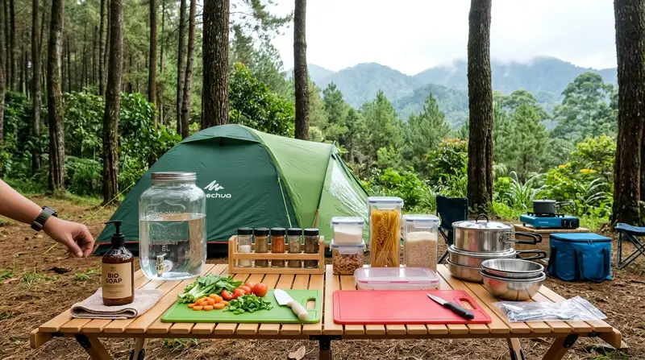

Cara menyimpan makanan saat berkemah yang aman adalah memakai cooler box, memisahkan daging mentah, menutup wadah rapat, dan tidak membiarkan makanan matang terlalu lama.
Ringkasan Inti
- Udara sejuk di Batu tidak menggantikan kulkas, sehingga bahan mudah rusak bila tidak didinginkan.
- Susun cooler box dengan es di dasar dan daging mentah dalam wadah tertutup.
- Makanan matang umumnya sebaiknya tidak berada di suhu ruang lebih dari dua jam.
- Cuci tangan, pisahkan alat mentah dan matang, dan gunakan air bersih.
- Artikel ini berisi informasi umum, bukan pengganti saran tenaga kesehatan.
Mengapa Penyimpanan Makanan Penting Saat Berkemah?
Penyimpanan penting karena makanan yang rusak atau terkontaminasi dapat menyebabkan penyakit bawaan makanan, sementara fasilitas kulkas dan air bersih di area perkemahan umumnya terbatas.
WHO memperkirakan sekitar 600 juta orang, hampir satu dari sepuluh penduduk dunia, jatuh sakit setiap tahun akibat makanan yang terkontaminasi, dengan sekitar 420.000 kematian. Angka ini berasal dari estimasi beban penyakit bawaan makanan dengan tahun acuan 2010, dan WHO menilai bahwa sebagian besar kasus dapat dicegah.
Di area perkemahan, risikonya meningkat karena suhu berubah-ubah, alat cuci terbatas, dan makanan sering disajikan di tempat terbuka. Penyimpanan yang benar adalah langkah pencegahan paling sederhana dan murah.
Bagaimana Cara Menata Cooler Box dengan Benar?
Susun cooler box dengan es atau ice pack di dasar, daging mentah dalam wadah tertutup di atasnya, lalu buah, sayur, dan minuman di bagian atas.
Langkah menata cooler box:
- Dinginkan cooler box lebih dulu dengan es selama beberapa jam sebelum berangkat.
- Bekukan bahan seperti ayam atau ikan sebelum dimasukkan agar membantu menjaga suhu.
- Letakkan es atau ice pack di dasar dan di sela bahan.
- Masukkan daging mentah dalam wadah atau kantong tertutup rapat agar cairannya tidak menetes.
- Letakkan sayur, buah, dan minuman di lapisan atas.
- Isi cooler box sepenuh mungkin, karena ruang kosong mempercepat es mencair.
Letakkan cooler box di tempat teduh dan jauh dari sinar matahari langsung. Kurangi frekuensi membuka tutupnya dengan memisahkan cooler box untuk minuman dan cooler box untuk bahan makanan bila memungkinkan.
Berapa Lama Makanan Matang Aman Disimpan Saat Berkemah?
Makanan matang umumnya sebaiknya tidak dibiarkan di suhu ruang lebih dari dua jam, karena suhu antara 5 dan 60 derajat Celsius memudahkan bakteri berkembang biak.
Udara dingin di Batu pada malam hari tidak otomatis menjaga makanan di bawah 5 derajat Celsius. Suhu udara pegunungan biasanya masih berada di rentang yang memungkinkan bakteri tumbuh, sehingga makanan tetap perlu diperlakukan hati-hati.
Pedoman umum yang mudah diingat: makan selagi panas, simpan sisa makanan dalam wadah tertutup di cooler box dengan es, dan buang makanan yang sudah lama di suhu ruang. Pada cuaca hangat atau siang hari terik, batas waktunya sebaiknya lebih pendek. Bila ragu, lebih baik buang daripada berisiko sakit.

Peralatan dapur camping higienis dengan wadah tertutup dan air bersih untuk menjaga keamanan pangan.
Bagaimana Memisahkan Daging Mentah dari Makanan Matang?
Pisahkan daging mentah, ikan, dan telur dari makanan matang dengan wadah tertutup, talenan dan pisau terpisah, serta cuci tangan setelah menyentuh bahan mentah.
Kontaminasi silang terjadi saat kuman dari bahan mentah berpindah ke makanan yang sudah matang atau siap makan. Pencegahannya sederhana:
- Gunakan talenan dan pisau khusus untuk daging mentah, atau cuci bersih sebelum dipakai untuk bahan lain.
- Jangan menaruh makanan matang di piring atau wadah bekas daging mentah.
- Cuci tangan dengan sabun setelah memegang bahan mentah dan sebelum makan.
- Simpan sayur yang dimakan mentah, seperti lalapan, terpisah dari daging mentah.
Bagaimana Menjaga Kebersihan Tangan, Alat, dan Air?
Jaga kebersihan dengan mencuci tangan memakai sabun dan air bersih, merebus atau memakai air minum kemasan, serta mencuci alat makan sebelum dan sesudah dipakai.
Bawa sabun cuci tangan, tisu basah, dan sabun cuci piring dalam ukuran kecil. Siapkan jerigen atau botol besar berisi air bersih khusus untuk mencuci. Air dari sumber alam, seperti aliran di sekitar air terjun atau sungai, sebaiknya tidak dipakai untuk minum atau mencuci makanan tanpa direbus terlebih dahulu.
Keringkan alat makan dengan kain bersih atau biarkan kering di udara, lalu simpan dalam wadah tertutup. Alat yang lembap dan kotor mudah menjadi sumber kuman.
Apa Tanda Makanan Sudah Tidak Layak Dimakan?
Buang makanan yang berbau asam, berlendir, berubah warna, atau kemasannya menggembung, dan jangan mengandalkan rasa atau bau saja karena kuman penyebab sakit tidak selalu terdeteksi.
Makanan yang tampak dan berbau normal tetap dapat mengandung kuman berbahaya. Karena itu, kebiasaan menyimpan dan memasak dengan benar lebih penting daripada menebak kondisi makanan dari penampilannya.
Waspadai pula santan, nasi, dan lauk berkuah yang dibiarkan lama di suhu ruang, karena makanan jenis ini mudah basi. Bila ada keraguan terhadap kondisi makanan, jangan dikonsumsi.
Bagaimana Mencegah Hewan Liar Mendekati Makanan?
Simpan makanan dalam wadah tertutup rapat, jauhkan dari tenda tempat tidur, dan bawa sampah ke tempat pembuangan agar hewan liar tidak tertarik mendekati perkemahan.
Di sekitar area perkemahan pegunungan, hewan seperti monyet, tikus, atau serangga dapat tertarik pada aroma makanan. Simpan bahan di dalam cooler box atau wadah kedap udara, taruh di tempat yang jauh dari tempat tidur, dan jangan meninggalkan makanan di luar saat tidur atau meninggalkan tenda.
Kumpulkan sampah dalam kantong tertutup dan buang ke tempat yang disediakan pengelola atau bawa pulang. Kebiasaan ini sekaligus menjaga kebersihan lingkungan perkemahan.
Apa Kesalahan Umum dalam Menyimpan Makanan Kemah?
Kesalahan umum meliputi membuka cooler box terlalu sering, memakai es yang terlalu sedikit, menyimpan sisa makanan tanpa tutup, dan memakai kembali wadah tanpa dicuci.
Kesalahan lain adalah memasukkan makanan yang masih panas langsung ke cooler box, sehingga es cepat mencair dan suhu di dalamnya naik. Dinginkan makanan sebentar dalam wadah tertutup sebelum disimpan. Selain itu, jangan mengandalkan udara dingin malam sebagai pengganti es untuk daging dan ikan.
Kapan Perlu ke Dokter Setelah Makan Saat Berkemah?
Segera cari bantuan medis bila muncul muntah terus-menerus, diare berat, demam tinggi, atau tanda dehidrasi, terutama pada anak, ibu hamil, dan lansia.
Artikel ini berisi informasi umum dan bukan pengganti nasihat tenaga kesehatan. Gejala keracunan makanan umumnya berupa mual, muntah, nyeri perut, dan diare, dan dapat muncul dalam hitungan jam hingga beberapa hari. Perbanyak minum air bersih dan hubungi fasilitas kesehatan terdekat bila gejala berat atau tidak membaik. Rujukan lebih lengkap tersedia di panduan keamanan pangan WHO.
FAQ Penyimpanan Makanan Saat Berkemah
Makanan tahan simpan seperti mi instan, roti, kacang, biskuit, dan buah utuh dapat disimpan tanpa cooler box. Daging, ikan, telur, susu, dan makanan matang berkuah tetap membutuhkan es atau pendingin agar tidak cepat rusak.
Simpan sisa makanan matang dalam wadah tertutup rapat dan masukkan ke cooler box dengan es secepatnya, idealnya dalam dua jam setelah dimasak. Panaskan kembali hingga benar-benar panas sebelum dimakan, dan buang bila kondisinya meragukan.
Udara dingin di Batu tidak cukup untuk mengawetkan daging, ikan, atau makanan matang. Suhu udara pegunungan umumnya lebih tinggi daripada suhu kulkas, sehingga bahan mudah rusak dan perlu didinginkan dengan es.